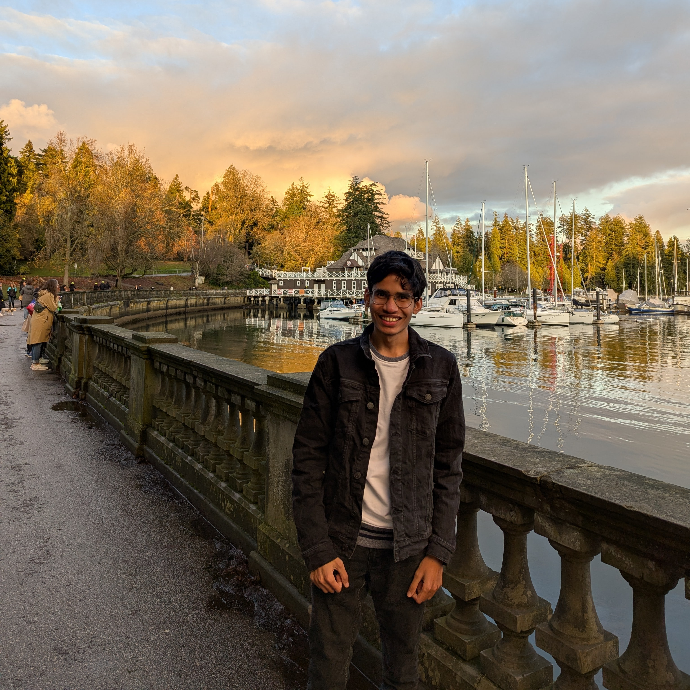

Machine learning · Reinforcement learning
Gagan Jain
I study how models learn from feedback and use computation efficiently.
At Proximal, I build reinforcement learning environments and post-train models. Previously, I worked on generative retrieval at Microsoft AI.
Before that, I was a pre-doctoral researcher at Google DeepMind and Google Research, working on training and decoding efficiency for Gemini and Veo. I co-developed Mixture of Nested Experts, LookupViT, and MaGNeTS. These projects explored how conditional computation, token compression, and decode-time scaling can make visual understanding and generation more efficient.
My path into machine learning began with autonomous driving and robotics at IIT Bombay, where I earned my B.Tech. (Hons.). Alongside my research, I co-organized SPOT at ICLR 2026, a workshop on scaling post-training for LLMs.

Since September 2026
Background & experience ↗
Recently
Sep 2026Joined Proximal to build RL environments and post-train models.
Jun 2026New preprint: Adaptive Block Diffusion, on the training–inference mismatch in diffusion language models.
Apr 2026Co-organizer of SPOT: Scaling Post-training for LLMs at ICLR 2026.
Explore my research ↗